Each school coloured by Value Added v2.1 for all pupils; choose another measure, including absence against intake, from the menu. Circle size is the school’s roll; hover for every group’s value added, absence against intake, the published v1 figure, and Ofsted.
West Sussex
Value Added v2.1 for West Sussex’s secondary schools.
NoteAbout this page
Value Added v2.1 for West Sussex’s state-funded secondary schools, 2021/22 to 2024/25, measured against England (see the method), with the analyses of the original Sussex document refitted on the v2.1 model. Built from published DfE and Ofsted data; nothing uses pupil-level records.
Summary
- 40 schools, with value added for all pupils averaging -0.3 points against England: 5 significantly above expectation and 9 below.
- Disadvantaged pupils -1.7, non-disadvantaged -0.4; girls -0.4, boys -0.2.
- Strongest: Shoreham Academy (+5.1). Weakest: The Gatwick School (-4.7).
- Absence runs 0.3 points below what the intake predicts on average over 2021/22 to 2024/25 (121st highest of 152 authorities); The Littlehampton Academy, Holy Trinity CofE Secondary School, Crawley, Chichester High School and The Burgess Hill Academy more than a point above.
- 11 of 40 schools add value with attendance at or better than their intake predicts; 6 add value despite worse attendance, and 11 are below expectation with worse attendance (value added and attendance).
- The authority’s own effect is +0.2% (78th of 152) for all pupils, -2.7% (125th) for disadvantaged pupils and -0.1% (83rd) for non-disadvantaged pupils.
- District effects on the v2.1 model (Crawley for all pupils (-4.2%), Crawley for disadvantaged pupils (-4.7%) and Crawley for non-disadvantaged pupils (-3.9%)) disappear once each school’s own record is counted: they belong to schools, not places.
- Suspensions: 16.2 episodes per 100 pupils (England 21.2); 5.9 pupils per 100 suspended at least once (England 7.3). Reduced timetables run at 1.9 times the national rate.
- Trusts that stand out nationally on v2.1: The Kemnal Academies Trust (all pupils -3.6% and absence +11.4%) and United Learning Trust (all pupils +7.3% and disadvantaged pupils +8.6%).
- Latest Ofsted: 7 report cards, 5 inspections with no overall grade, 17 graded inspections and 11 ungraded visits only.
- 2025/26, provisional: value added for all pupils averages +0.4 points across the area’s schools on DfE’s provisional results. This will be updated with the revised release in February 2027.
The schools
| School | District | All pupils | Disadv. | Non-disadv. | Girls | Boys | Absence vs intake | 2025/26 (provisional) | v1 | Ofsted latest | Run by (2024/25) |
|---|---|---|---|---|---|---|---|---|---|---|---|
| Shoreham Academy | Adur | +5.1 (+2.9 to +7.4) | +3.9 | +4.9 | +3.8 | +5.6 | -0.8 | +2.3 | +3.5 | Outstanding (Feb 2024) | United Learning Trust |
| St Oscar Romero Catholic School | Worthing | +4.6 (+2.3 to +7.0) | +2.0 | +5.1 | +3.5 | +5.1 | -3.6 | +5.7 | +6.4 | No overall grade (Apr 2025): quality of education Outstanding | Maintained by the council |
| St Philip Howard Catholic School | Arun | +2.7 (+0.4 to +5.0) | -1.6 | +3.1 | +2.5 | +2.5 | -1.3 | +2.8 | +1.0 | Report card (Apr 2026): achievement Strong standard, curriculum and teaching Strong standard | Bosco Catholic Education Trust |
| The Regis School | Arun | +2.7 (+0.8 to +4.6) | +1.2 | +2.3 | +2.9 | +2.1 | -0.7 | +6.8 | +2.4 | Remains Good (Mar 2023, ungraded visit) | United Learning Trust |
| Downlands Community School | Mid Sussex | +2.2 (-0.1 to +4.7) | +0.4 | +2.4 | +1.7 | +2.0 | -0.4 | +6.9 | +4.4 | Report card (Jul 2026): achievement Strong standard, curriculum and teaching Strong standard | Maintained by the council |
| Durrington High School | Worthing | +2.2 (+0.1 to +4.4) | -0.8 | +2.4 | +1.4 | +2.7 | -1.0 | +4.6 | +2.7 | Good (Mar 2022) | Durrington Multi Academy Trust |
| Midhurst Rother College | Chichester | +1.8 (-0.2 to +4.0) | +0.8 | +1.5 | +1.2 | +2.1 | -0.5 | +0.6 | +1.4 | Outstanding (May 2024) | United Learning Trust |
| Worthing High School | Worthing | +1.6 (-0.4 to +3.8) | +1.2 | +1.1 | -0.1 | +3.0 | +0.6 | -1.6 | +3.0 | Standards maintained (Mar 2025, ungraded visit) | South Downs Education Trust |
| Weald School, The | Horsham | +1.6 (-0.5 to +3.7) | -2.0 | +1.7 | +2.2 | +0.6 | -1.8 | +4.0 | -0.8 | No overall grade (Oct 2024): quality of education Good | Maintained by the council |
| Steyning Grammar School | Horsham | +1.3 (-0.6 to +3.4) | -1.3 | +1.1 | +1.7 | +0.7 | -0.0 | +2.1 | +2.9 | Report card (Mar 2026): achievement Expected standard, curriculum and teaching Expected standard | Bohunt Education Trust |
| Tanbridge House School | Horsham | +1.3 (-1.0 to +3.7) | -2.9 | +1.8 | +1.1 | +1.3 | -1.4 | +4.6 | +0.8 | Outstanding (Jun 2024) | Maintained by the council |
| Imberhorne School | Mid Sussex | +1.2 (-0.8 to +3.2) | -2.8 | +1.0 | +1.6 | +0.1 | +0.6 | +3.0 | +1.0 | Standards maintained (Oct 2024, ungraded visit) | Maintained by the council |
| Sackville School | Mid Sussex | +0.6 (-1.3 to +2.7) | -1.0 | +0.2 | +0.3 | +0.4 | +0.5 | +1.7 | +1.0 | Remains Good (May 2024, ungraded visit) | Maintained by the council |
| Davison Church of England High School for Girls, Worthing | Worthing | +0.5 (-1.7 to +2.8) | -2.2 | +0.5 | +0.2 | +0.0 | +1.0 | +2.1 | Outstanding (Jun 2024) | Maintained by the council | |
| St Andrew's CofE High School | Worthing | +0.3 (-1.5 to +2.2) | +1.2 | -0.8 | +1.6 | +0.4 | +1.5 | +1.6 | Good (Apr 2023) | Maintained by the council | |
| The Sir Robert Woodard Academy | Adur | +0.3 (-1.5 to +2.2) | +0.7 | -0.2 | +0.6 | +0.2 | -0.5 | +0.9 | -0.6 | Report card (Jan 2026): achievement Expected standard, curriculum and teaching Expected standard | Woodard Academies Trust |
| Millais School | Horsham | +0.0 (-2.3 to +2.4) | -1.3 | -0.2 | -0.1 | +0.8 | +0.5 | +3.0 | Good (Sep 2022) | Maintained by the council | |
| Oathall Community College | Mid Sussex | -0.2 (-2.3 to +2.1) | -5.4 | +0.4 | +0.4 | -1.1 | -1.4 | +1.1 | +1.5 | Remains Good (Sep 2023, ungraded visit) | Maintained by the council |
| Hazelwick School | Crawley | -0.2 (-2.3 to +2.0) | -2.0 | +0.1 | -0.0 | -0.3 | -1.7 | -4.0 | -1.5 | Outstanding (Oct 2023) | Single-academy trust |
| Holy Trinity CofE Secondary School, Crawley | Crawley | -0.2 (-2.0 to +1.6) | -1.7 | -0.5 | -0.1 | -0.5 | +1.3 | -1.4 | -1.1 | Good (Nov 2023) | Maintained by the council |
| Ormiston Six Villages Academy | Arun | -0.4 (-2.2 to +1.5) | -2.9 | -0.3 | -2.0 | +1.0 | -0.5 | -0.3 | +0.7 | Good (Nov 2022) | Ormiston Academies Trust |
| Warden Park Secondary Academy | Mid Sussex | -0.6 (-2.9 to +1.7) | -4.9 | -0.3 | +0.4 | -1.5 | +0.3 | +0.6 | +0.8 | Report card (Jun 2026): achievement Expected standard, curriculum and teaching Expected standard | Sussex Learning Trust |
| Chichester High School | Chichester | -0.9 (-2.6 to +0.9) | -1.9 | -1.2 | -0.7 | -1.3 | +1.3 | -2.0 | -0.8 | No overall grade (Nov 2024): quality of education Good | The Kemnal Academies Trust |
| Bishop Luffa School, Chichester | Chichester | -0.9 (-3.1 to +1.4) | -4.2 | -0.4 | -1.9 | -0.2 | -0.4 | +0.7 | -1.4 | Outstanding (Nov 2022) | Bishop Luffa Learning Partnership |
| The Burgess Hill Academy | Mid Sussex | -1.0 (-2.9 to +0.9) | -2.7 | -1.2 | -1.1 | -1.3 | +1.3 | +0.3 | -0.2 | Some aspects not as strong (Dec 2024, ungraded visit) | University of Brighton Academies Trust |
| Bourne Community College | Chichester | -1.2 (-3.0 to +0.7) | -1.2 | -1.7 | -0.4 | -1.8 | -0.4 | -2.3 | -0.4 | Report card (Jan 2026): achievement Needs attention, curriculum and teaching Needs attention | Maintained by the council |
| St Paul's Catholic College | Mid Sussex | -1.2 (-3.9 to +1.6) | -2.4 | -0.5 | -1.5 | -1.2 | -1.3 | +1.1 | -2.1 | Outstanding (Feb 2023) | Bosco Catholic Education Trust |
| The Angmering School | Arun | -1.3 (-3.0 to +0.5) | -2.6 | -1.6 | -0.5 | -1.6 | +0.1 | -1.0 | -2.4 | Good (Oct 2022) | Maintained by the council |
| Oriel High School | Crawley | -1.6 (-3.6 to +0.5) | -3.3 | -1.6 | -2.3 | -0.8 | -0.5 | -2.0 | -1.9 | No overall grade (Mar 2025): quality of education Good | Maintained by the council |
| Felpham Community College | Arun | -1.6 (-3.4 to +0.3) | -1.3 | -2.2 | -1.0 | -2.1 | +0.8 | -1.9 | -2.1 | Standards maintained (Oct 2024, ungraded visit) | Maintained by the council |
| Ifield Community College | Crawley | -1.8 (-3.4 to -0.1) | -1.2 | -2.5 | -2.1 | -1.1 | -0.5 | -2.2 | Remains Good (Apr 2023, ungraded visit) | Maintained by the council | |
| Bohunt Horsham | Horsham | -1.9 (-4.8 to +1.0) | -1.1 | -2.3 | -2.3 | -0.9 | +0.0 | -3.7 | -0.9 | Good (Oct 2023) | Bohunt Education Trust |
| Bohunt School Worthing | Worthing | -2.2 (-4.2 to -0.1) | -3.0 | -2.4 | -2.4 | -1.3 | -0.5 | -2.5 | -1.5 | Remains Good (Oct 2023, ungraded visit) | Bohunt Education Trust |
| The Academy, Selsey | Chichester | -2.4 (-4.0 to -0.7) | -0.3 | -3.5 | -1.8 | -2.6 | +0.1 | -2.6 | -1.3 | No overall grade (Jan 2025): quality of education Good | The Kemnal Academies Trust |
| The Forest School | Horsham | -2.5 (-4.5 to -0.3) | -1.6 | -3.0 | -1.0 | +0.5 | -0.6 | Remains Good (Jan 2022, ungraded visit) | Maintained by the council | ||
| The Littlehampton Academy | Arun | -2.8 (-4.4 to -1.2) | -2.5 | -3.4 | -3.0 | -2.2 | +2.1 | -3.1 | -3.5 | Report card (Feb 2026): achievement Needs attention, curriculum and teaching Expected standard | Woodard Academies Trust |
| St Wilfrid's Catholic Comprehensive School, Crawley | Crawley | -3.0 (-5.1 to -0.9) | -5.9 | -2.5 | -3.4 | -2.4 | -1.2 | -5.0 | -4.0 | Remains Good (Mar 2023, ungraded visit) | Maintained by the council |
| Chichester Free School | Chichester | -4.2 (-6.0 to -2.2) | -2.6 | -4.4 | -4.5 | -3.7 | -1.4 | -2.7 | -3.1 | Good (May 2024) | Sussex Learning Trust |
| Thomas Bennett Community College | Crawley | -4.5 (-5.9 to -3.1) | -4.0 | -4.4 | -3.7 | -4.6 | +0.3 | -3.1 | -6.0 | Good (Oct 2022) | The Kemnal Academies Trust |
| The Gatwick School | Crawley | -4.7 (-6.3 to -3.1) | -4.1 | -5.3 | -4.6 | -4.5 | -0.7 | +2.2 | -4.6 | Good (May 2024) | Aurora Academies Trust |
Who runs them
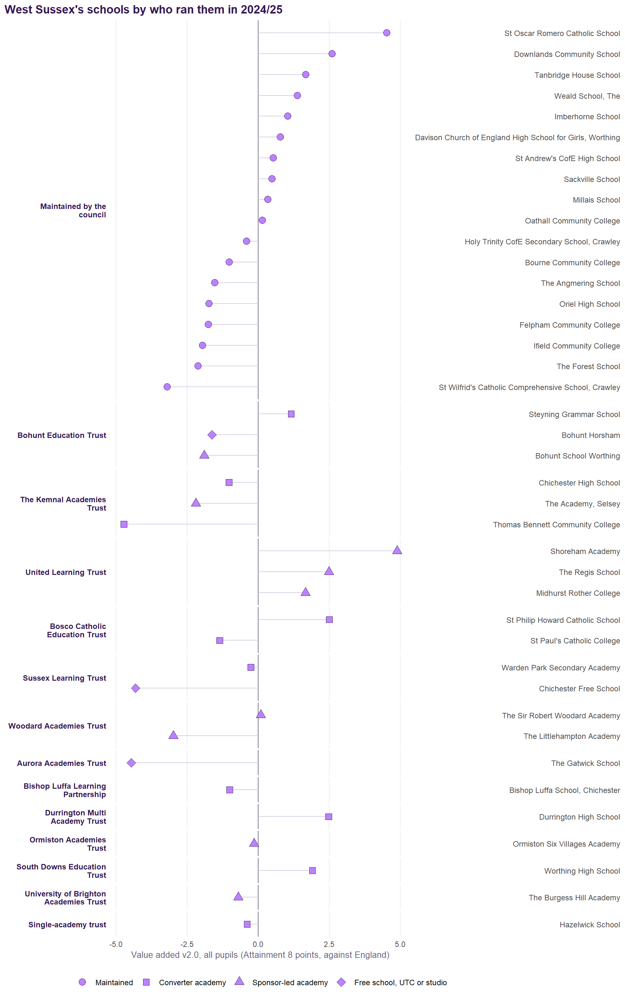
Value added and attendance
Two questions, kept apart. Does the school add value? Value Added v2.1 answers that with absence allowed for: a school with more absence is expected to score lower, so it is judged on what it achieves given its attendance. Does it hold attendance? Absence against intake answers that: how far its absence runs above or below what pupils like its own would predict. The chart sets one against the other. Neither contains the other, so the four corners mean what they say.
Of 40 schools, 11 add value with attendance at or better than their intake predicts, and 6 add value despite worse attendance. 11 are below expectation with worse attendance, and 12 are below expectation despite attendance at or better than predicted. Across England the two are close to independent (correlation -0.07; -0.33 across West Sussex’s schools). Adding value and holding attendance are different things, and plenty of schools do one without the other.
Value added with no allowance for absence. The map also offers value added from the model without its absence term. It does not excuse a school its absence: for every percentage point its absence runs above what its intake predicts, it loses about 1.1 Attainment 8 points against Value Added v2.1. It is the two axes above folded into one number, so it belongs on the map, not on this chart, where it would contain the absence it is plotted against. Millais School and Imberhorne School show the difference: above expectation on Value Added v2.1 (+0.0 and +1.2), below it with no allowance for absence (-2.1 and -0.4), because absence runs +0.8 and +0.6 points above what the intake predicts. See the methodology.
Value added allowing for the kind of absence. The map also offers value added with the illness share of absence in the expectation: where more of a school’s absence is illness, the same absence is expected to cost less. It is published beside Value Added v2.1, not in it, because what is authorised as illness is partly the school’s own coding (methodology). Across West Sussex’s schools the two agree at 1.00; no school moves by as much as half a point.
| School | District | Value added v2.1 | Absence vs intake | No allowance for absence | Run by (2024/25) |
|---|---|---|---|---|---|
| Furthest above | |||||
| Shoreham Academy | Adur | +5.1 | -0.8 | +5.9 | United Learning Trust |
| St Oscar Romero Catholic School | Worthing | +4.6 | -3.6 | +9.9 | Maintained by the council |
| St Philip Howard Catholic School | Arun | +2.7 | -1.3 | +4.0 | Bosco Catholic Education Trust |
| The Regis School | Arun | +2.7 | -0.7 | +3.1 | United Learning Trust |
| Downlands Community School | Mid Sussex | +2.2 | -0.4 | +1.8 | Maintained by the council |
| Durrington High School | Worthing | +2.2 | -1.0 | +3.0 | Durrington Multi Academy Trust |
| Midhurst Rother College | Chichester | +1.8 | -0.5 | +1.5 | United Learning Trust |
| Worthing High School | Worthing | +1.6 | +0.6 | +0.2 | South Downs Education Trust |
| Furthest below | |||||
| Bohunt School Worthing | Worthing | -2.2 | -0.5 | -2.6 | Bohunt Education Trust |
| The Academy, Selsey | Chichester | -2.4 | +0.1 | -3.4 | The Kemnal Academies Trust |
| The Forest School | Horsham | -2.5 | +0.5 | -4.6 | Maintained by the council |
| The Littlehampton Academy | Arun | -2.8 | +2.1 | -5.6 | Woodard Academies Trust |
| St Wilfrid's Catholic Comprehensive School, Crawley | Crawley | -3.0 | -1.2 | -2.3 | Maintained by the council |
| Chichester Free School | Chichester | -4.2 | -1.4 | -3.9 | Sussex Learning Trust |
| Thomas Bennett Community College | Crawley | -4.5 | +0.3 | -5.8 | The Kemnal Academies Trust |
| The Gatwick School | Crawley | -4.7 | -0.7 | -5.2 | Aurora Academies Trust |
What West Sussex’s schools add, and what absence takes away
Value added already counts absence as part of a school’s context, so what absence moves and what the school moves are separate quantities rather than one counted twice. Below, the blue bar is what this area’s absence is worth against the England average of 8.6% in 2024/25, run through the national gradient; the purple bar is the area’s mean value added, which is measured against England already. The diamond is the two together. Absence here is full-year absence in 2024/25, the mean of schools; value added covers 2021/22 to 2024/25. How the bars are computed from the model is set out in the methodology.
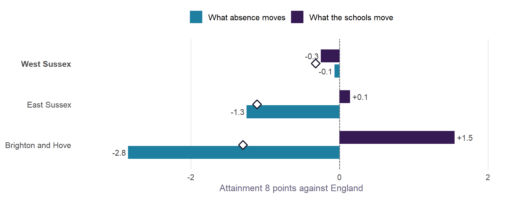
West Sussex’s schools ran at 8.7% absence in 2024/25 against England’s 8.6%, which on the national gradient is worth -0.1 Attainment 8 points. Their mean value added is -0.3, so the two together leave the area -0.3 points against England. Both are pulling the same way, downwards.
For disadvantaged pupils the same absence is worth -0.1 points of their Attainment 8 (mean 38.4), against -0.1 for non-disadvantaged pupils (mean 50.3) and -0.1 for pupils as a whole (47.5): the gradient is 77% steeper for them than for non-disadvantaged pupils, so wherever attendance is the problem it is a sharper problem for the pupils with least room to absorb it.
The gradient is associational. It says what schools with this much absence look like once intake is accounted for, not what this area would gain by changing it.
How West Sussex compares
| Measure | West Sussex | East Sussex | Brighton and Hove | England |
|---|---|---|---|---|
| Attainment 8, all pupils | 46.4 (71st) | 43.8 | 45.5 | 46.8 |
| Attainment 8, disadvantaged | 33.5 (127th) | 33.0 | 33.9 | 37.7 |
| Attainment 8, non-disadvantaged | 48.9 (83rd) | 47.5 | 49.6 | 49.9 |
| Disadvantage gap (points) | 15.4 (16th) | 14.5 | 15.7 | 12.2 |
| Disadvantaged (FSM6) % | 17.1 (143rd) | 25.5 | 28.8 | 28.4 |
| Overall absence % | 8.7 (71st) | 9.7 | 11.3 | 8.6 |
| Persistent absence % | 23.9 (79th) | 26.4 | 30.6 | 23.9 |
| Mean KS2 (centred) | 4.26 (79th) | 3.79 | 4.71 | 4.47 |
| EAL % | 11.0 (97th) | 6.3 | 13.0 | 18.4 |
| Value added v2.1, all pupils | -0.3 | +0.0 | +1.4 | 0.0 |
| Value added v2.1, disadvantaged | -1.7 | -0.7 | +0.4 | 0.0 |
| Value added v2.1, non-disadvantaged | -0.4 | +0.1 | +1.5 | 0.0 |
| Absence against intake (pp) | -0.3 | +0.4 | +1.7 | 0.0 |
What explains attainment in West Sussex
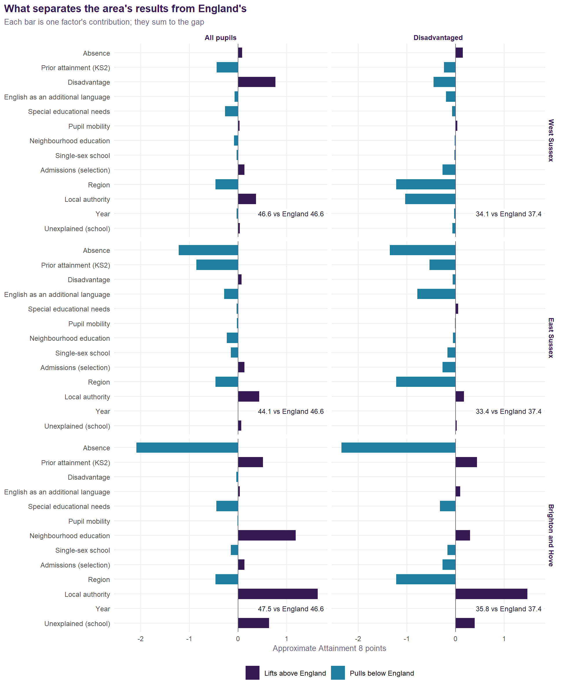
| Factor | All pupils | Disadvantaged | Non-disadvantaged |
|---|---|---|---|
| Prior attainment (KS2) | -0.44 | -0.24 | -0.35 |
| Place (region and local authority) | -0.36 | -2.29 | -0.44 |
| Special educational needs | -0.25 | -0.08 | -0.23 |
| English as an additional language | -0.11 | -0.20 | -0.11 |
| Neighbourhood education | -0.08 | -0.02 | -0.08 |
| Single-sex school | -0.03 | -0.02 | -0.02 |
| Unexplained (school) | +0.00 | -0.07 | -0.00 |
| School stops at 16 | +0.03 | +0.02 | +0.03 |
| Pupil mobility | +0.03 | +0.03 | +0.03 |
| Absence | +0.09 | +0.15 | +0.11 |
| Other model terms | +0.14 | -0.31 | +0.08 |
| Disadvantage | +0.98 | -0.42 | +0.34 |
For all pupils, West Sussex is 0.0 points below England. The pieces of at least a quarter of a point:
- disadvantage (+0.98);
- prior attainment (KS2) (-0.44);
- region (-0.40);
- special educational needs (-0.25);
- and the schools themselves (+0.00).
For disadvantaged pupils, West Sussex is 3.5 points below England. The pieces of at least a quarter of a point:
- region (-1.23);
- local authority (-1.06);
- disadvantage (-0.42);
- admissions (selection) (-0.28);
- and the schools themselves (-0.07).
For non-disadvantaged pupils, West Sussex is 0.6 points below England. The pieces of at least a quarter of a point:
- region (-0.40);
- prior attainment (KS2) (-0.35);
- disadvantage (+0.34);
- and the schools themselves (-0.00).
Trusts
The v2.1 model with a multi-academy trust level, allowing for each school’s own record and for how it came to be an academy, so trusts that take on struggling schools are not penalised for it. Nationally a trust moves results by about 3.0%, and absence by about 6.5%.
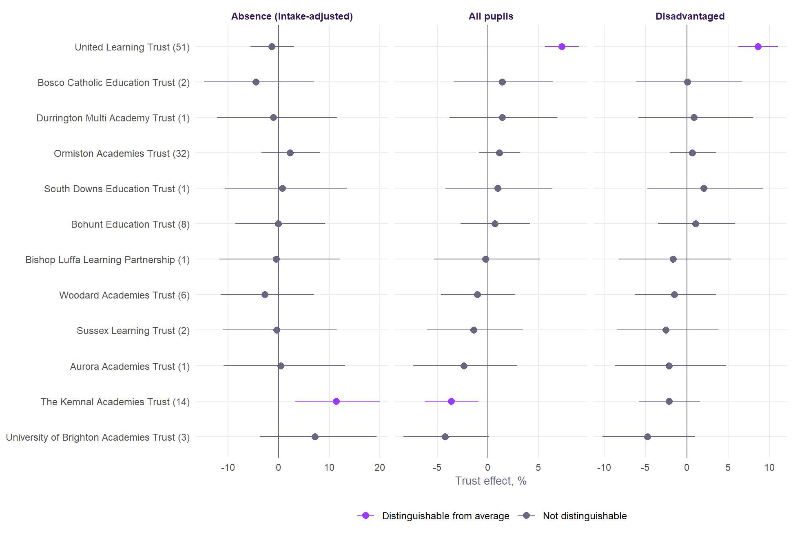
The disadvantaged gap, and girls and boys
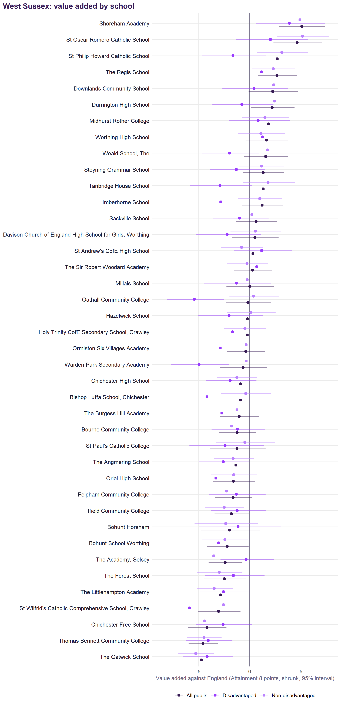
Of 40 schools:
- 6 are above expectation for both disadvantaged and non-disadvantaged pupils.
- 8 are above expectation for non-disadvantaged pupils but more than a point below it for disadvantaged ones: the gap schools.
- 2 have girls’ and boys’ value added more than two points apart.
| School | Disadvantaged | Non-disadvantaged | Gap |
|---|---|---|---|
| Gap schools: above for non-disadvantaged, more than a point below for disadvantaged | |||
| Oathall Community College | -5.4 | +0.4 | +5.8 |
| Tanbridge House School | -2.9 | +1.8 | +4.7 |
| Imberhorne School | -2.8 | +1.0 | +3.8 |
| Davison Church of England High School for Girls, Worthing | -2.2 | +0.5 | +2.7 |
| Hazelwick School | -2.0 | +0.1 | +2.1 |
| Weald School, The | -2.0 | +1.7 | +3.7 |
| St Philip Howard Catholic School | -1.6 | +3.1 | +4.7 |
| Steyning Grammar School | -1.3 | +1.1 | +2.4 |
| Above expectation for both groups | |||
| Shoreham Academy | +3.9 | +4.9 | +1.0 |
| St Oscar Romero Catholic School | +2.0 | +5.1 | +3.1 |
| Worthing High School | +1.2 | +1.1 | -0.1 |
| The Regis School | +1.2 | +2.3 | +1.1 |
| Midhurst Rother College | +0.8 | +1.5 | +0.7 |
| Downlands Community School | +0.4 | +2.4 | +1.9 |
| School | Girls | Boys | Boys minus girls |
|---|---|---|---|
| Worthing High School | -0.1 | +3.0 | +3.1 |
| Ormiston Six Villages Academy | -2.0 | +1.0 | +3.0 |
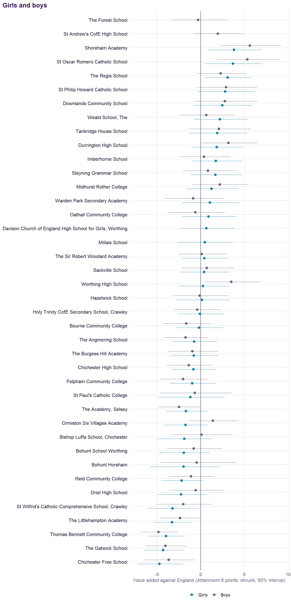
Absence
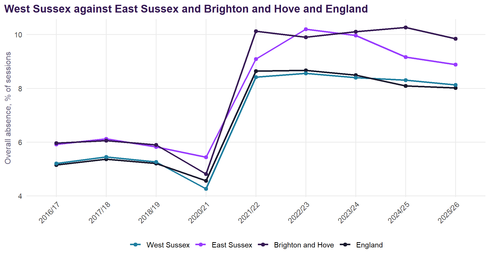
- 8.1% absence in autumn and spring 2025/26 (8.3% a year earlier), against 8.0% for England. These are all sessions together, so a large school counts for more than a small one; the full-year 2024/25 figures in what absence takes away are a mean of schools.
- Against its intake, on the v2.1 intake terms, the area’s schools ran 0.28 points below what their pupils’ profiles predict over 2021/22 to 2024/25 (East Sussex +0.37 and Brighton and Hove +1.67).
- The Littlehampton Academy, Holy Trinity CofE Secondary School, Crawley, Chichester High School and The Burgess Hill Academy each run more than a point above their predictions.
- 10 schools run more than a point below: the foot of the table.
| School | Absence % | Predicted by intake % | Above prediction | Illness | Unauthorised | Reduced timetable | Suspended |
|---|---|---|---|---|---|---|---|
| The Littlehampton Academy | 12.2 | 10.0 | +2.1 | 6.0 | 3.2 | 0.57 | 0.55 |
| Holy Trinity CofE Secondary School, Crawley | 10.5 | 9.2 | +1.3 | 3.8 | 3.2 | 1.39 | 0.41 |
| Chichester High School | 11.5 | 10.2 | +1.3 | 3.0 | 3.3 | 0.17 | 0.47 |
| The Burgess Hill Academy | 10.2 | 8.9 | +1.3 | 3.2 | 3.1 | 0.50 | 0.23 |
| Felpham Community College | 9.6 | 8.8 | +0.8 | 4.6 | 2.1 | 0.41 | 0.14 |
| Millais School | 8.8 | 8.0 | +0.8 | 4.4 | 1.4 | 0.37 | 0.23 |
| Worthing High School | 9.2 | 8.6 | +0.6 | 4.9 | 1.1 | 1.09 | 0.09 |
| Imberhorne School | 9.8 | 9.2 | +0.6 | 3.9 | 2.2 | 0.24 | 0.14 |
| Sackville School | 9.4 | 8.9 | +0.5 | 4.5 | 2.2 | 0.67 | 0.06 |
| The Forest School | 8.6 | 8.1 | +0.5 | 4.1 | 1.4 | 0.41 | 0.12 |
| St Andrew's CofE High School | 10.1 | 9.8 | +0.4 | 3.9 | 4.2 | 0.75 | 0.42 |
| Thomas Bennett Community College | 11.3 | 11.0 | +0.3 | 4.4 | 2.3 | 0.52 | 0.73 |
| Warden Park Secondary Academy | 8.0 | 7.7 | +0.3 | 3.2 | 2.3 | 0.24 | 0.07 |
| The Academy, Selsey | 10.3 | 10.1 | +0.1 | 5.1 | 2.6 | 0.27 | 0.23 |
| The Angmering School | 10.0 | 9.9 | +0.1 | 4.0 | 3.0 | 0.24 | 0.20 |
| Bohunt Horsham | 7.8 | 7.7 | +0.0 | 4.3 | 0.9 | 1.18 | 0.05 |
| Davison Church of England High School for Girls, Worthing | 8.2 | 8.2 | +0.0 | 4.2 | 1.3 | 0.75 | 0.12 |
| Steyning Grammar School | 9.3 | 9.3 | -0.0 | 4.4 | 2.1 | 0.51 | 0.22 |
| Bourne Community College | 9.6 | 9.9 | -0.4 | 4.7 | 2.2 | 0.88 | 0.35 |
| Downlands Community School | 7.5 | 7.9 | -0.4 | 4.8 | 1.0 | 0.56 | 0.24 |
| Bishop Luffa School, Chichester | 7.4 | 7.9 | -0.4 | 3.9 | 0.5 | 0.30 | 0.02 |
| Ifield Community College | 9.6 | 10.0 | -0.5 | 3.7 | 2.9 | 0.46 | 0.16 |
| Oriel High School | 7.9 | 8.3 | -0.5 | 4.4 | 0.9 | 0.70 | 0.23 |
| Midhurst Rother College | 8.8 | 9.3 | -0.5 | 2.7 | 2.3 | 1.02 | 0.05 |
| The Sir Robert Woodard Academy | 9.8 | 10.3 | -0.5 | 3.6 | 3.7 | 0.23 | 0.12 |
| Bohunt School Worthing | 7.8 | 8.4 | -0.5 | 3.5 | 2.0 | 1.41 | 0.32 |
| Ormiston Six Villages Academy | 9.2 | 9.8 | -0.5 | 5.2 | 2.2 | 0.09 | 0.11 |
| The Regis School | 9.1 | 9.8 | -0.7 | 4.3 | 2.2 | 0.08 | 0.11 |
| The Gatwick School | 9.2 | 9.8 | -0.7 | 3.2 | 2.7 | 0.76 | 0.07 |
| Shoreham Academy | 8.2 | 9.0 | -0.8 | 3.9 | 1.1 | 0.52 | 0.09 |
| Durrington High School | 8.0 | 9.1 | -1.0 | 4.3 | 2.3 | 0.47 | 0.19 |
| St Wilfrid's Catholic Comprehensive School, Crawley | 6.7 | 8.0 | -1.2 | 3.2 | 1.0 | 0.28 | 0.05 |
| St Paul's Catholic College | 5.9 | 7.2 | -1.3 | 3.4 | 1.2 | 0.30 | 0.05 |
| St Philip Howard Catholic School | 6.9 | 8.2 | -1.3 | 4.3 | 0.9 | 0.15 | 0.05 |
| Tanbridge House School | 6.8 | 8.1 | -1.4 | 4.0 | 1.2 | 1.36 | 0.10 |
| Chichester Free School | 7.8 | 9.2 | -1.4 | 5.2 | 1.0 | 0.19 | 0.05 |
| Oathall Community College | 7.4 | 8.8 | -1.4 | 3.9 | 1.4 | 1.19 | 0.13 |
| Hazelwick School | 6.6 | 8.3 | -1.7 | 3.6 | 1.1 | 0.23 | 0.15 |
| Weald School, The | 7.9 | 9.7 | -1.8 | 4.5 | 1.5 | 0.53 | 0.18 |
| St Oscar Romero Catholic School | 5.6 | 9.3 | -3.6 | 3.3 | 0.9 | 0.06 | 0.05 |
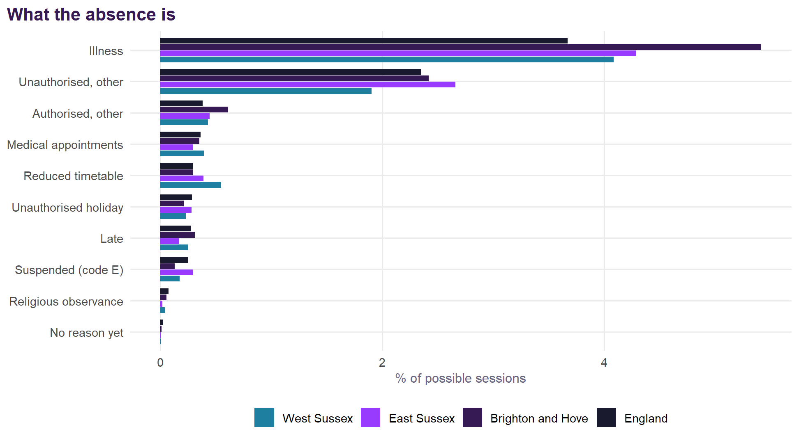
What goes with absence here
The national absence analysis models seven kinds of absence in every secondary school in England, using autumn and spring 2025/26 and the January 2026 census. Here it is applied to West Sussex’s 38 schools with full data. It compares them with England, with Sussex, the South East, East Sussex and Brighton and Hove.
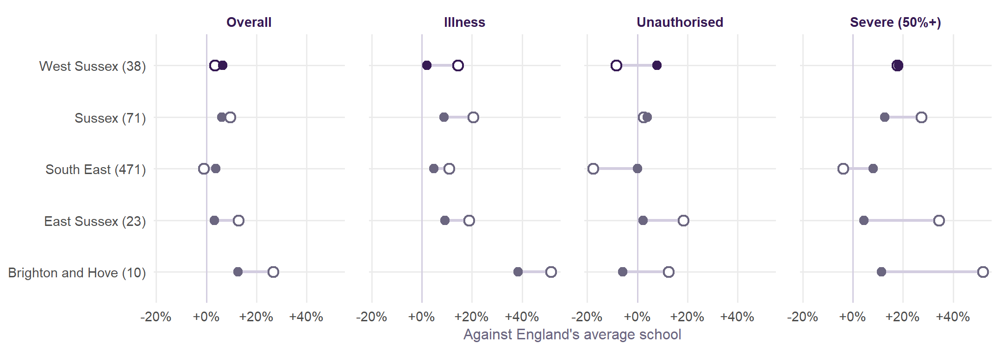
- Overall, West Sussex’s schools have 3% more absence than England’s average school. Once their intake is allowed for, the difference is +6%.
- By kind, against England (in brackets, once intake is allowed for): illness is 14% higher (2% higher), unauthorised absence 8% lower (8% higher), and severe absence 18% higher (18% higher).
- What pushes absence up most here, against England, is ethnicity and language (+6% overall). What holds it down most is poverty (-8%). For illness, the biggest push is poverty (+8%).
- West Sussex’s own effect, after intake: illness +4% (57th of 152 authorities), unauthorised +5% (52nd).
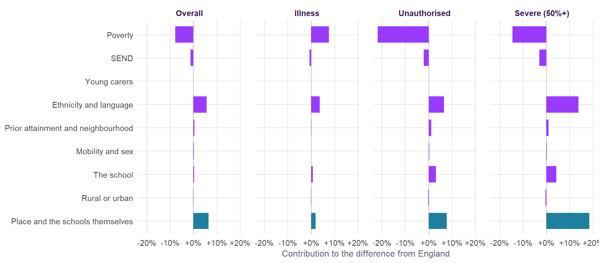
- 11 schools run more than a point above the absence their intake predicts: the top of the table below.
- St Oscar Romero Catholic School runs more than a point below.
| School | Overall | Above prediction | Illness | Unauthorised | Severe (50%+) |
|---|---|---|---|---|---|
| The Littlehampton Academy | 12.5 (8.5) | +4.0 | 6.0 (4.0) | 3.9 (2.8) | 7.6 (4.0) |
| Holy Trinity CofE Secondary School, Crawley | 10.8 (7.2) | +3.6 | 3.8 (3.4) | 4.3 (2.4) | 5.5 (2.4) |
| St Andrew's CofE High School | 10.7 (9.1) | +1.6 | 3.9 (4.2) | 4.9 (2.9) | 6.0 (4.2) |
| Thomas Bennett Community College | 10.0 (8.7) | +1.3 | 4.4 (3.5) | 3.3 (3.6) | 4.6 (3.9) |
| Sackville School | 8.8 (7.5) | +1.3 | 4.5 (4.2) | 2.9 (2.2) | 3.8 (3.1) |
| The Sir Robert Woodard Academy | 9.2 (8.0) | +1.3 | 3.6 (4.1) | 4.1 (2.3) | 4.1 (3.4) |
| Bohunt Horsham | 8.0 (6.8) | +1.2 | 4.3 (4.2) | 1.2 (1.6) | 3.6 (2.6) |
| Downlands Community School | 7.9 (6.7) | +1.1 | 4.8 (4.3) | 1.5 (1.6) | 3.9 (2.5) |
| Oriel High School | 8.4 (7.3) | +1.1 | 4.4 (4.1) | 1.7 (2.0) | 3.3 (2.7) |
| Worthing High School | 8.6 (7.6) | +1.1 | 4.9 (4.0) | 1.7 (2.2) | 4.8 (3.3) |
| Durrington High School | 8.8 (7.7) | +1.1 | 4.3 (3.9) | 3.0 (2.5) | 5.0 (3.5) |
| Tanbridge House School | 7.7 (7.1) | +0.7 | 4.0 (4.2) | 1.5 (1.8) | 4.0 (2.8) |
| Bourne Community College | 9.6 (9.0) | +0.6 | 4.7 (4.5) | 2.8 (2.7) | 4.3 (4.4) |
| Bohunt School Worthing | 8.3 (7.7) | +0.6 | 3.5 (3.9) | 2.3 (2.3) | 4.3 (3.3) |
| Weald School, The | 8.9 (8.4) | +0.5 | 4.5 (4.8) | 2.0 (2.2) | 4.4 (3.8) |
| Steyning Grammar School | 8.3 (7.8) | +0.5 | 4.4 (4.3) | 2.3 (2.0) | 3.5 (3.2) |
| Chichester Free School | 8.2 (7.7) | +0.5 | 5.2 (4.3) | 1.5 (2.1) | 3.3 (3.3) |
| Warden Park Secondary Academy | 7.2 (6.8) | +0.4 | 3.2 (4.2) | 2.5 (1.6) | 3.0 (2.7) |
| The Burgess Hill Academy | 8.6 (8.3) | +0.3 | 3.2 (4.2) | 3.6 (2.4) | 4.5 (3.8) |
| Millais School | 8.1 (7.8) | +0.3 | 4.4 (4.5) | 2.0 (2.1) | 3.6 (3.3) |
| Ormiston Six Villages Academy | 9.1 (8.8) | +0.3 | 5.2 (4.1) | 2.8 (3.0) | 2.9 (4.3) |
| The Academy, Selsey | 9.9 (9.7) | +0.2 | 5.1 (4.4) | 3.0 (3.3) | 4.6 (5.3) |
| The Gatwick School | 8.1 (8.0) | +0.2 | 3.2 (3.8) | 3.1 (2.9) | 4.9 (3.6) |
| St Paul's Catholic College | 5.9 (5.8) | +0.1 | 3.4 (4.1) | 1.5 (1.1) | 1.4 (1.6) |
| Imberhorne School | 7.9 (7.9) | +0.1 | 3.9 (4.5) | 2.7 (2.2) | 3.6 (3.3) |
| Oathall Community College | 7.6 (7.6) | +0.0 | 3.9 (4.3) | 1.8 (2.0) | 4.2 (3.3) |
| Davison Church of England High School for Girls, Worthing | 7.8 (7.8) | -0.1 | 4.2 (4.5) | 1.8 (2.1) | 3.8 (3.5) |
| Hazelwick School | 6.4 (6.5) | -0.1 | 3.6 (3.5) | 1.7 (1.8) | 2.0 (2.1) |
| Midhurst Rother College | 7.5 (7.6) | -0.1 | 2.7 (4.4) | 2.7 (1.9) | 3.5 (3.3) |
| Felpham Community College | 8.1 (8.2) | -0.1 | 4.6 (4.1) | 2.5 (2.7) | 3.3 (3.5) |
| St Philip Howard Catholic School | 6.5 (6.7) | -0.2 | 4.3 (4.0) | 1.3 (1.7) | 2.2 (2.4) |
| St Wilfrid's Catholic Comprehensive School, Crawley | 6.0 (6.4) | -0.4 | 3.2 (3.8) | 1.5 (1.6) | 1.8 (1.9) |
| Chichester High School | 8.2 (8.7) | -0.5 | 3.0 (3.8) | 3.9 (3.1) | 3.7 (4.3) |
| Bishop Luffa School, Chichester | 6.1 (6.8) | -0.7 | 3.9 (4.2) | 1.0 (1.6) | 1.2 (2.6) |
| Shoreham Academy | 6.6 (7.5) | -0.9 | 3.9 (4.0) | 1.4 (2.1) | 2.4 (3.1) |
| The Angmering School | 8.1 (9.0) | -0.9 | 4.0 (4.3) | 3.2 (3.0) | 3.5 (4.4) |
| The Regis School | 8.0 (9.0) | -1.0 | 4.3 (3.9) | 2.6 (3.6) | 2.7 (4.6) |
| St Oscar Romero Catholic School | 5.1 (7.5) | -2.4 | 3.3 (4.3) | 1.0 (2.0) | 2.0 (2.9) |
For heads and governors
The national page sets out what the school’s part in absence is. In short:
- Who runs a school, its size and its religious character make little difference to absence once intake is allowed for.
- Schools with the same intake can differ a great deal, and the differences persist from year to year.
The table compares each of West Sussex’s schools with similar schools in its own authority, in 2024/25 and 2025/26. Click a school to open it in Find a twin, which finds its look-alikes across England, and the look-alikes that do much better.
- 9 schools have unauthorised absence more than 20% above similar schools in both years. That is the pattern worth asking about.
- 5 schools have unauthorised absence more than 20% below similar schools in both years. What they do may be worth sharing.
| School | Overall 24/25 | Overall 25/26 | Unauthorised 24/25 | Unauthorised 25/26 | Severe 24/25 | Severe 25/26 |
|---|---|---|---|---|---|---|
| Holy Trinity CofE Secondary School, Crawley | +48% | +44% | +83% | +78% | +110% | +116% |
| The Sir Robert Woodard Academy | +6% | +11% | +78% | +75% | +22% | +14% |
| St Andrew's CofE High School | +12% | +13% | +29% | +67% | +32% | +34% |
| Warden Park Secondary Academy | +4% | +2% | +66% | +57% | +9% | +4% |
| The Burgess Hill Academy | +12% | -0% | +23% | +48% | +38% | +12% |
| Midhurst Rother College | +0% | -5% | +65% | +41% | -4% | +0% |
| The Littlehampton Academy | +39% | +41% | +76% | +37% | +104% | +81% |
| Sackville School | +15% | +13% | +7% | +28% | +17% | +15% |
| St Paul's Catholic College | -1% | -2% | +29% | +27% | +24% | -18% |
| Imberhorne School | +14% | -3% | +1% | +26% | +61% | +2% |
| Chichester High School | +11% | -9% | +80% | +23% | +7% | -17% |
| Durrington High School | +5% | +9% | +14% | +19% | +14% | +35% |
| Steyning Grammar School | +11% | +2% | +24% | +18% | +11% | +4% |
| The Gatwick School | +3% | -2% | +12% | +9% | +61% | +29% |
| The Angmering School | +5% | -13% | +26% | +6% | +17% | -24% |
| Bourne Community College | -12% | +3% | +16% | +3% | -51% | -8% |
| Bohunt School Worthing | -4% | +3% | +9% | -0% | +12% | +25% |
| Millais School | +5% | +0% | -15% | -2% | +28% | +1% |
| St Wilfrid's Catholic Comprehensive School, Crawley | -8% | -10% | -21% | -5% | -28% | -7% |
| Ormiston Six Villages Academy | -18% | -1% | -31% | -6% | -59% | -35% |
| Downlands Community School | +4% | +12% | -20% | -6% | -6% | +47% |
| Felpham Community College | +0% | -5% | -0% | -8% | -2% | -10% |
| The Academy, Selsey | +4% | -2% | +4% | -8% | +19% | -16% |
| Thomas Bennett Community College | +18% | +11% | +48% | -8% | +37% | +10% |
| Hazelwick School | -9% | -5% | -12% | -9% | -40% | -10% |
| Weald School, The | -14% | +2% | -25% | -10% | -24% | +11% |
| Oathall Community College | -7% | -3% | +2% | -11% | -11% | +19% |
| Tanbridge House School | -10% | +5% | -27% | -14% | -16% | +35% |
| Davison Church of England High School for Girls, Worthing | -1% | -4% | +26% | -14% | +4% | +2% |
| Oriel High School | +3% | +10% | -5% | -16% | -4% | +19% |
| St Philip Howard Catholic School | -2% | -7% | -18% | -22% | -6% | -12% |
| Worthing High School | +7% | +10% | -7% | -23% | +20% | +38% |
| Bohunt Horsham | -1% | +12% | -20% | -25% | +7% | +31% |
| Chichester Free School | -4% | +2% | -54% | -27% | -22% | -5% |
| The Regis School | -20% | -14% | -46% | -27% | -47% | -43% |
| Shoreham Academy | -9% | -15% | -34% | -33% | -8% | -26% |
| Bishop Luffa School, Chichester | -8% | -13% | -28% | -37% | -15% | -53% |
| St Oscar Romero Catholic School | -35% | -35% | -56% | -44% | -30% | -34% |
Suspensions were 16.2 episodes per 100 pupils in 2024/25, against 21.2 for England. One pupil can be suspended several times: 5.9 pupils per 100 were suspended at least once, about 2.7 times each, against 7.3 per 100 and 2.9 times in England. Reduced timetables take 0.55% of sessions, 1.9 times England’s rate.
| School | Pupils | Suspension episodes per 100 | Pupils suspended per 100 | Permanent exclusions |
|---|---|---|---|---|
| Thomas Bennett Community College | 1262 | 60.8 | 13.7 | 7 |
| The Littlehampton Academy | 1369 | 56.2 | 12.6 | 9 |
| St Andrew's CofE High School | 739 | 49.8 | 12.4 | 0 |
| Bourne Community College | 729 | 43.9 | 12.5 | 0 |
| Bohunt School Worthing | 897 | 38.4 | 13.7 | 2 |
| Chichester High School | 1258 | 37.2 | 11.4 | 8 |
| The Burgess Hill Academy | 1018 | 30.3 | 10.5 | 0 |
| The Academy, Selsey | 501 | 28.7 | 12.6 | 2 |
| Durrington High School | 1606 | 24.0 | 6.4 | 7 |
| Holy Trinity CofE Secondary School, Crawley | 1359 | 22.1 | 8.8 | 0 |
| Downlands Community School | 1250 | 20.3 | 5.1 | 0 |
| Steyning Grammar School | 1944 | 18.0 | 7.6 | 2 |
| The Angmering School | 1345 | 17.3 | 6.5 | 8 |
| Midhurst Rother College | 1158 | 15.6 | 6.0 | 3 |
| Hazelwick School | 1890 | 15.3 | 7.9 | 6 |
| Oathall Community College | 1303 | 14.4 | 5.1 | 2 |
| Ormiston Six Villages Academy | 698 | 14.3 | 7.0 | 0 |
| Tanbridge House School | 1524 | 13.9 | 4.6 | 2 |
| Felpham Community College | 1557 | 13.6 | 6.4 | 0 |
| The Forest School | 1095 | 13.4 | 5.2 | 2 |
| Millais School | 1055 | 13.3 | 6.0 | 0 |
| Weald School, The | 1784 | 12.7 | 3.8 | 1 |
| Ifield Community College | 1204 | 12.2 | 6.1 | 6 |
| Imberhorne School | 1573 | 12.0 | 5.4 | 1 |
| The Regis School | 1665 | 8.8 | 3.5 | 2 |
| The Sir Robert Woodard Academy | 1412 | 8.7 | 3.8 | 2 |
| Chichester Free School | 1078 | 8.3 | 4.3 | 2 |
| Sackville School | 1599 | 8.1 | 3.9 | 0 |
| The Gatwick School | 846 | 7.8 | 4.4 | 1 |
| Bohunt Horsham | 1121 | 7.7 | 4.5 | 2 |
| Shoreham Academy | 1777 | 6.7 | 3.1 | 2 |
| Oriel High School | 1478 | 5.8 | 4.0 | 2 |
| Davison Church of England High School for Girls, Worthing | 1328 | 5.6 | 4.1 | 0 |
| St Philip Howard Catholic School | 1301 | 5.2 | 3.8 | 0 |
| Worthing High School | 1055 | 4.6 | 2.7 | 2 |
| St Paul's Catholic College | 1190 | 4.5 | 2.6 | 0 |
| Warden Park Secondary Academy | 1538 | 3.9 | 2.2 | 0 |
| St Wilfrid's Catholic Comprehensive School, Crawley | 1174 | 3.8 | 2.6 | 2 |
| Bishop Luffa School, Chichester | 1579 | 2.7 | 1.8 | 1 |
| St Oscar Romero Catholic School | 1075 | 1.1 | 0.7 | 0 |
| School | Absence % | Gain, all pupils | Gain, disadvantaged |
|---|---|---|---|
| The Littlehampton Academy | 12.6 | +3.5 | +3.6 |
| Holy Trinity CofE Secondary School, Crawley | 11.9 | +3.3 | +3.7 |
| St Andrew's CofE High School | 11.1 | +2.5 | +3.1 |
| Thomas Bennett Community College | 11.6 | +2.3 | +2.6 |
| The Academy, Selsey | 11.1 | +2.3 | +2.8 |
| Ifield Community College | 10.9 | +2.3 | +2.6 |
| Chichester High School | 10.7 | +2.0 | +2.2 |
| The Angmering School | 10.3 | +1.8 | +1.7 |
| The Burgess Hill Academy | 10.0 | +1.6 | +1.7 |
| Sackville School | 9.9 | +1.5 | +1.6 |
| Imberhorne School | 9.5 | +1.1 | +0.9 |
| Steyning Grammar School | 9.3 | +0.9 | +0.9 |
| The Sir Robert Woodard Academy | 9.3 | +0.7 | +0.8 |
| The Gatwick School | 9.2 | +0.6 | +0.6 |
| Worthing High School | 8.9 | +0.4 | +0.4 |
| Durrington High School | 8.8 | +0.4 | +0.4 |
| Oriel High School | 8.8 | +0.3 | +0.3 |
| Felpham Community College | 8.8 | +0.3 | +0.3 |
| Millais School | 8.6 | +0.1 | +0.1 |
| Bourne Community College | 8.6 | +0.1 | +0.1 |
Over time
Value added is computed for every year separately, then averaged. A single year moves a good deal; a three-year moving average centred on a year (that year, the one before and the one after) shows the trajectory more steadily. Years at the ends use the years they have. 2025/26 is provisional and shown as a hollow point. The explorer lets you choose the centre year and the window.
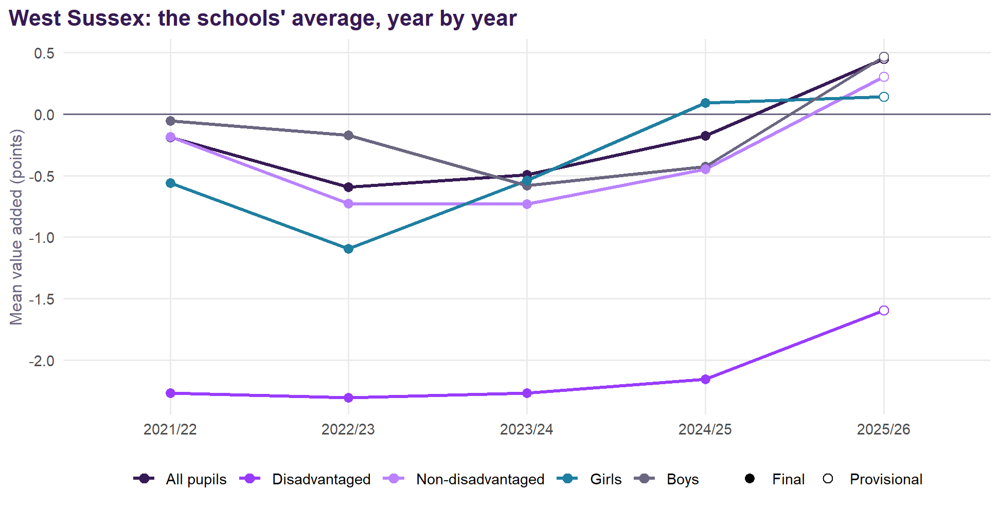
On the three-year centred average from 2022/23 to 2024/25, the largest rises are at The Gatwick School (+5.0) and Downlands Community School (+3.1) and the largest falls at Midhurst Rother College (-1.9) and St Wilfrid’s Catholic Comprehensive School, Crawley (-2.3). The later windows include the provisional 2025/26 year.
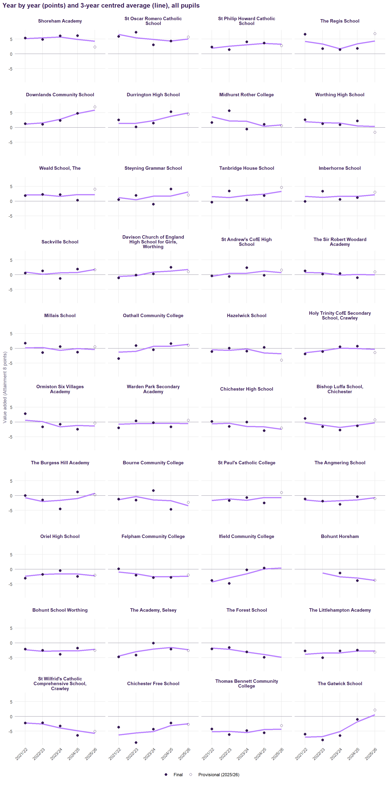
| School | 2022/23 | 2023/24 | 2024/25 |
|---|---|---|---|
| Shoreham Academy | +5.4 | +5.7 | +4.8 |
| Downlands Community School | +1.6 | +2.7 | +4.7 |
| St Oscar Romero Catholic School | +5.4 | +4.9 | +4.3 |
| Durrington High School | +1.4 | +2.3 | +3.8 |
| St Philip Howard Catholic School | +2.6 | +3.1 | +3.5 |
| The Regis School | +3.3 | +1.7 | +3.4 |
| Tanbridge House School | +1.2 | +1.9 | +2.3 |
| Weald School, The | +2.1 | +1.6 | +2.2 |
| Steyning Grammar School | +0.5 | +1.7 | +1.7 |
| Imberhorne School | +1.3 | +1.7 | +1.6 |
| Davison Church of England High School for Girls, Worthing | -0.3 | +0.9 | +1.3 |
| St Andrew's CofE High School | +0.4 | +0.5 | +1.2 |
| Sackville School | +0.2 | +0.6 | +0.8 |
| Oathall Community College | -1.0 | +0.7 | +0.7 |
| Worthing High School | +1.6 | +1.5 | +0.5 |
| Midhurst Rother College | +2.3 | +2.1 | +0.4 |
| The Sir Robert Woodard Academy | +0.7 | -0.1 | +0.1 |
| Ifield Community College | -2.9 | -1.5 | +0.1 |
| Holy Trinity CofE Secondary School, Crawley | -0.8 | +0.1 | -0.1 |
| Millais School | +0.3 | -0.7 | -0.1 |
| Warden Park Secondary Academy | -0.6 | -0.5 | -0.4 |
| St Paul's Catholic College | -1.1 | -1.6 | -0.7 |
| The Burgess Hill Academy | -2.0 | -1.6 | -1.0 |
| Bishop Luffa School, Chichester | -1.0 | -1.9 | -1.1 |
| Ormiston Six Villages Academy | +0.1 | -1.6 | -1.2 |
| The Angmering School | -2.0 | -1.7 | -1.4 |
| Hazelwick School | -0.6 | -0.2 | -1.5 |
| The Academy, Selsey | -3.0 | -2.1 | -1.6 |
| Oriel High School | -1.7 | -1.5 | -1.6 |
| Chichester High School | -0.4 | -1.5 | -1.7 |
| Bourne Community College | -0.3 | -1.5 | -1.7 |
| The Gatwick School | -6.8 | -5.1 | -1.8 |
| Felpham Community College | -1.6 | -2.5 | -2.5 |
| Bohunt School Worthing | -2.9 | -2.7 | -2.7 |
| The Littlehampton Academy | -3.5 | -3.4 | -2.8 |
| Bohunt Horsham | -1.3 | -2.6 | -2.9 |
| Chichester Free School | -5.6 | -5.1 | -3.1 |
| The Forest School | -2.2 | -3.2 | -4.0 |
| Thomas Bennett Community College | -5.0 | -5.5 | -4.5 |
| St Wilfrid's Catholic Comprehensive School, Crawley | -2.5 | -3.9 | -4.9 |
Contextual league tables
Warning2025/26 is provisional
2025/26 is provisional: predicted from the v2.1 model using DfE’s provisional KS4 results (October 2026), with absence bridged from autumn and spring and the intake data not yet published carried forward. It will be updated with the revised KS4 release in February 2027. It is shown beside the four-year figure, not averaged into it, and is not shrunk: one provisional year of a school’s results moves a good deal.
| School | 2021/22 | 2022/23 | 2023/24 | 2024/25 | v2.1, four years (shrunk) | 95% interval | 2025/26 (provisional) |
|---|---|---|---|---|---|---|---|
| Shoreham Academy | +5.4 | +4.9 | +6.1 | +6.2 | +5.1 | +2.9 to +7.4 | +2.3 |
| St Oscar Romero Catholic School | +5.9 | +7.3 | +3.1 | +4.3 | +4.6 | +2.3 to +7.0 | +5.7 |
| St Philip Howard Catholic School | +2.3 | +1.5 | +4.1 | +3.7 | +2.7 | +0.4 to +5.0 | +2.8 |
| The Regis School | +6.7 | +1.8 | +1.4 | +1.9 | +2.7 | +0.8 to +4.6 | +6.8 |
| Downlands Community School | +1.3 | +1.0 | +2.4 | +4.8 | +2.2 | -0.1 to +4.7 | +6.9 |
| Durrington High School | +2.5 | +0.2 | +1.4 | +5.3 | +2.2 | +0.1 to +4.4 | +4.6 |
| Midhurst Rother College | +1.7 | +5.7 | -0.6 | +1.1 | +1.8 | -0.2 to +4.0 | +0.6 |
| Worthing High School | +2.6 | +1.3 | +0.9 | +2.2 | +1.6 | -0.4 to +3.8 | -1.6 |
| Weald School, The | +1.9 | +2.2 | +2.2 | +0.3 | +1.6 | -0.5 to +3.7 | +4.0 |
| Steyning Grammar School | +0.5 | +1.9 | -1.0 | +4.1 | +1.3 | -0.6 to +3.4 | +2.1 |
| Tanbridge House School | -0.3 | +3.4 | +0.4 | +1.9 | +1.3 | -1.0 to +3.7 | +4.6 |
| Imberhorne School | -0.1 | +3.3 | +0.6 | +1.2 | +1.2 | -0.8 to +3.2 | +3.0 |
| Sackville School | +0.5 | +1.3 | -1.3 | +1.9 | +0.6 | -1.3 to +2.7 | +1.7 |
| Davison Church of England High School for Girls, Worthing | -1.1 | -0.1 | +0.3 | +2.5 | +0.5 | -1.7 to +2.8 | +1.0 |
| St Andrew's CofE High School | -0.4 | -0.6 | +2.3 | -0.2 | +0.3 | -1.5 to +2.2 | +1.5 |
| The Sir Robert Woodard Academy | +1.3 | +0.2 | +0.4 | -1.0 | +0.3 | -1.5 to +2.2 | +0.9 |
| Millais School | +1.7 | -1.4 | +0.6 | -1.3 | +0.0 | -2.3 to +2.4 | +0.5 |
| Oathall Community College | -3.5 | +0.9 | -0.5 | +1.6 | -0.2 | -2.3 to +2.1 | +1.1 |
| Hazelwick School | -1.1 | +0.1 | -1.0 | +0.4 | -0.2 | -2.3 to +2.0 | -4.0 |
| Holy Trinity CofE Secondary School, Crawley | -1.9 | -1.1 | +0.6 | +0.7 | -0.2 | -2.0 to +1.6 | -1.4 |
| Ormiston Six Villages Academy | +2.8 | -1.6 | -0.8 | -2.5 | -0.4 | -2.2 to +1.5 | -0.3 |
| Warden Park Secondary Academy | -2.0 | +0.4 | -0.2 | -1.7 | -0.6 | -2.9 to +1.7 | +0.6 |
| Chichester High School | +0.2 | -1.5 | -0.0 | -2.9 | -0.9 | -2.6 to +0.9 | -2.0 |
| Bishop Luffa School, Chichester | +1.2 | -1.6 | -2.7 | -1.3 | -0.9 | -3.1 to +1.4 | +0.7 |
| The Burgess Hill Academy | -0.0 | -1.5 | -4.5 | +1.2 | -1.0 | -2.9 to +0.9 | +0.3 |
| Bourne Community College | -1.2 | -1.5 | +1.7 | -4.6 | -1.2 | -3.0 to +0.7 | -2.3 |
| St Paul's Catholic College | -1.6 | -0.6 | -2.5 | -1.2 | -3.9 to +1.6 | +1.1 | |
| The Angmering School | -1.1 | -1.9 | -3.0 | -0.4 | -1.3 | -3.0 to +0.5 | -1.0 |
| Oriel High School | -3.0 | -1.7 | -0.4 | -2.5 | -1.6 | -3.6 to +0.5 | -2.0 |
| Felpham Community College | +0.1 | -2.0 | -2.8 | -2.8 | -1.6 | -3.4 to +0.3 | -1.9 |
| Ifield Community College | -3.8 | -4.8 | -0.2 | +0.4 | -1.8 | -3.4 to -0.1 | |
| Bohunt Horsham | -1.3 | -3.9 | -1.9 | -4.8 to +1.0 | -3.7 | ||
| Bohunt School Worthing | -2.1 | -2.5 | -3.9 | -1.8 | -2.2 | -4.2 to -0.1 | -2.5 |
| The Academy, Selsey | -4.8 | -4.1 | -0.1 | -2.1 | -2.4 | -4.0 to -0.7 | -2.6 |
| The Forest School | -2.0 | -1.6 | -3.0 | -4.9 | -2.5 | -4.5 to -0.3 | |
| The Littlehampton Academy | -2.7 | -5.0 | -2.7 | -2.5 | -2.8 | -4.4 to -1.2 | -3.1 |
| St Wilfrid's Catholic Comprehensive School, Crawley | -2.2 | -2.2 | -3.2 | -6.4 | -3.0 | -5.1 to -0.9 | -5.0 |
| Chichester Free School | -3.6 | -8.8 | -4.3 | -2.2 | -4.2 | -6.0 to -2.2 | -2.7 |
| Thomas Bennett Community College | -4.2 | -6.1 | -4.8 | -5.5 | -4.5 | -5.9 to -3.1 | -3.1 |
| The Gatwick School | -6.0 | -7.9 | -6.4 | -1.0 | -4.7 | -6.3 to -3.1 | +2.2 |
| School | 2021/22 | 2022/23 | 2023/24 | 2024/25 | v2.1, four years (shrunk) | 95% interval | 2025/26 (provisional) |
|---|---|---|---|---|---|---|---|
| Shoreham Academy | +2.3 | +4.6 | +2.7 | +10.3 | +3.9 | +0.6 to +7.4 | -1.0 |
| St Oscar Romero Catholic School | +4.4 | +3.1 | +5.4 | -2.7 | +2.0 | -1.3 to +5.7 | +3.0 |
| Worthing High School | +2.7 | +0.4 | -0.4 | +2.9 | +1.2 | -1.6 to +4.4 | +0.2 |
| The Regis School | +3.8 | +1.2 | -1.0 | +1.3 | +1.2 | -1.5 to +4.1 | +3.1 |
| St Andrew's CofE High School | +3.0 | -4.5 | +3.8 | +3.8 | +1.2 | -1.5 to +4.1 | -2.6 |
| Midhurst Rother College | +4.3 | +3.4 | -2.6 | -1.2 | +0.8 | -2.0 to +3.9 | +3.0 |
| The Sir Robert Woodard Academy | +4.5 | -1.8 | +2.2 | -1.6 | +0.7 | -2.0 to +3.6 | +2.9 |
| Downlands Community School | -4.0 | -4.1 | +1.6 | +8.2 | +0.4 | -2.7 to +3.7 | +3.7 |
| The Academy, Selsey | -11.2 | +6.6 | +2.9 | +0.9 | -0.3 | -2.8 to +2.4 | -4.9 |
| Durrington High School | -2.1 | -2.7 | -2.0 | +1.6 | -0.8 | -3.6 to +2.3 | +4.8 |
| Sackville School | +0.4 | +2.5 | -9.4 | +2.3 | -1.0 | -3.6 to +1.8 | +3.6 |
| Bohunt Horsham | -0.1 | -4.0 | -1.1 | -4.9 to +3.1 | -4.3 | ||
| Bourne Community College | -1.5 | +0.7 | +2.6 | -8.0 | -1.2 | -3.7 to +1.5 | -5.9 |
| Ifield Community College | -2.6 | -3.8 | -0.7 | -0.1 | -1.2 | -3.8 to +1.6 | |
| Steyning Grammar School | -3.2 | -5.3 | -0.8 | +2.0 | -1.3 | -3.8 to +1.5 | -1.0 |
| Millais School | -3.0 | +1.1 | +1.6 | -6.9 | -1.3 | -4.4 to +2.1 | -2.6 |
| Felpham Community College | +0.3 | +2.1 | -4.1 | -5.3 | -1.3 | -3.9 to +1.6 | -4.8 |
| The Forest School | -3.5 | -5.5 | +3.5 | -3.0 | -1.6 | -4.4 to +1.4 | |
| St Philip Howard Catholic School | -8.8 | -1.5 | +1.7 | -0.8 | -1.6 | -4.6 to +1.6 | +0.8 |
| Holy Trinity CofE Secondary School, Crawley | -5.8 | -2.9 | -1.3 | +0.1 | -1.7 | -4.3 to +1.1 | -4.6 |
| Chichester High School | -0.8 | -7.1 | -0.7 | -1.8 | -1.9 | -4.2 to +0.7 | -6.9 |
| Weald School, The | -5.6 | +0.1 | -5.0 | -0.8 | -2.0 | -4.6 to +0.9 | +1.9 |
| Hazelwick School | -3.0 | -4.2 | -1.9 | -2.4 | -2.0 | -5.1 to +1.3 | -5.8 |
| Davison Church of England High School for Girls, Worthing | -1.2 | -5.3 | -2.9 | -2.8 | -2.2 | -5.2 to +1.1 | -0.8 |
| St Paul's Catholic College | -1.7 | -8.0 | -0.5 | -2.4 | -5.8 to +1.4 | -2.3 | |
| The Littlehampton Academy | -3.6 | -2.7 | -3.8 | -3.8 | -2.5 | -4.8 to -0.1 | -4.0 |
| The Angmering School | -7.3 | +1.8 | -4.5 | -3.8 | -2.6 | -4.9 to -0.0 | -3.0 |
| Chichester Free School | -9.0 | -5.8 | +1.0 | +0.1 | -2.6 | -5.2 to +0.3 | -4.9 |
| The Burgess Hill Academy | -5.5 | -5.1 | -4.7 | +0.4 | -2.7 | -5.2 to -0.0 | -6.9 |
| Imberhorne School | +0.7 | +1.2 | -8.5 | -6.4 | -2.8 | -5.2 to -0.2 | -0.6 |
| Ormiston Six Villages Academy | +3.5 | -7.8 | -6.0 | -4.4 | -2.9 | -5.3 to -0.2 | +4.3 |
| Tanbridge House School | -2.0 | -2.3 | -6.6 | -4.6 | -2.9 | -5.8 to +0.3 | -1.3 |
| Bohunt School Worthing | -1.6 | -3.5 | -4.5 | -6.4 | -3.0 | -5.8 to +0.0 | -11.0 |
| Oriel High School | -2.5 | -2.9 | -3.0 | -8.6 | -3.3 | -6.0 to -0.3 | -5.8 |
| Thomas Bennett Community College | -3.9 | -5.8 | -5.6 | -5.9 | -4.0 | -6.2 to -1.7 | -6.5 |
| The Gatwick School | -5.6 | -9.6 | -2.3 | -4.2 | -4.1 | -6.5 to -1.6 | +0.4 |
| Bishop Luffa School, Chichester | +2.6 | -4.9 | -8.0 | -10.7 | -4.2 | -6.9 to -1.2 | +0.5 |
| Warden Park Secondary Academy | -3.3 | -7.1 | -7.1 | -8.4 | -4.9 | -7.6 to -2.0 | +2.8 |
| Oathall Community College | -10.7 | -6.2 | -9.3 | -2.1 | -5.4 | -8.0 to -2.5 | -1.3 |
| St Wilfrid's Catholic Comprehensive School, Crawley | -8.9 | -5.4 | -6.6 | -10.0 | -5.9 | -8.7 to -2.8 | -4.0 |
| School | 2021/22 | 2022/23 | 2023/24 | 2024/25 | v2.1, four years (shrunk) | 95% interval | 2025/26 (provisional) |
|---|---|---|---|---|---|---|---|
| St Oscar Romero Catholic School | +6.2 | +8.1 | +2.8 | +6.1 | +5.1 | +2.6 to +7.8 | +6.3 |
| Shoreham Academy | +6.1 | +4.5 | +6.6 | +4.9 | +4.9 | +2.5 to +7.4 | +2.7 |
| St Philip Howard Catholic School | +3.9 | +1.9 | +4.1 | +3.9 | +3.1 | +0.7 to +5.7 | +2.9 |
| Durrington High School | +3.2 | +0.5 | +1.5 | +5.3 | +2.4 | +0.1 to +4.8 | +3.5 |
| Downlands Community School | +2.1 | +1.6 | +2.3 | +4.3 | +2.4 | -0.1 to +5.0 | +6.7 |
| The Regis School | +6.3 | +1.2 | +1.4 | +1.4 | +2.3 | +0.3 to +4.4 | +7.0 |
| Tanbridge House School | +0.4 | +4.0 | +1.1 | +2.2 | +1.8 | -0.7 to +4.4 | +4.7 |
| Weald School, The | +2.7 | +2.0 | +2.8 | -0.0 | +1.7 | -0.5 to +4.1 | +3.5 |
| Midhurst Rother College | +1.0 | +5.4 | -0.8 | +0.8 | +1.5 | -0.7 to +3.8 | -0.4 |
| Steyning Grammar School | +0.5 | +2.3 | -1.5 | +3.6 | +1.1 | -1.0 to +3.4 | +1.8 |
| Worthing High School | +1.9 | +0.9 | +0.4 | +1.3 | +1.1 | -1.1 to +3.4 | -2.8 |
| Imberhorne School | -0.6 | +2.7 | +0.5 | +1.3 | +1.0 | -1.1 to +3.2 | +2.7 |
| Davison Church of England High School for Girls, Worthing | -1.5 | +0.2 | +0.4 | +2.7 | +0.5 | -1.9 to +3.1 | +0.7 |
| Oathall Community College | -2.3 | +1.7 | +0.1 | +1.7 | +0.4 | -2.0 to +2.9 | +1.0 |
| Sackville School | +0.4 | +0.5 | -1.1 | +0.7 | +0.2 | -1.9 to +2.4 | +0.5 |
| Hazelwick School | -0.7 | +0.9 | -0.9 | +0.7 | +0.1 | -2.2 to +2.5 | -4.0 |
| Millais School | +1.9 | -1.8 | -0.2 | -1.4 | -0.2 | -2.7 to +2.3 | +0.2 |
| The Sir Robert Woodard Academy | -0.2 | +0.6 | -0.7 | -1.4 | -0.2 | -2.2 to +1.8 | -0.4 |
| Warden Park Secondary Academy | -2.1 | +1.0 | +0.3 | -1.4 | -0.3 | -2.8 to +2.2 | +0.1 |
| Ormiston Six Villages Academy | +1.7 | -0.8 | -0.2 | -2.9 | -0.3 | -2.4 to +1.8 | -2.5 |
| Bishop Luffa School, Chichester | +1.3 | -1.2 | -1.9 | -0.5 | -0.4 | -2.8 to +2.1 | +0.8 |
| St Paul's Catholic College | -0.8 | +0.7 | -2.1 | -0.5 | -3.3 to +2.5 | +1.7 | |
| Holy Trinity CofE Secondary School, Crawley | -1.7 | -1.4 | +0.3 | +0.1 | -0.5 | -2.5 to +1.6 | -0.7 |
| St Andrew's CofE High School | -2.2 | -0.5 | +1.1 | -2.4 | -0.8 | -2.8 to +1.3 | +1.4 |
| The Burgess Hill Academy | +0.3 | -1.1 | -5.5 | +0.5 | -1.2 | -3.3 to +0.9 | +0.7 |
| Chichester High School | -0.5 | -0.7 | -0.8 | -4.1 | -1.2 | -3.2 to +0.8 | -0.2 |
| Oriel High School | -3.0 | -1.9 | -0.5 | -2.3 | -1.6 | -3.7 to +0.7 | -2.2 |
| The Angmering School | -0.2 | -3.4 | -3.4 | -0.6 | -1.6 | -3.5 to +0.4 | -0.7 |
| Bourne Community College | -1.8 | -3.0 | +0.7 | -4.2 | -1.7 | -3.7 to +0.3 | -2.2 |
| Felpham Community College | -0.6 | -3.4 | -3.4 | -3.2 | -2.2 | -4.2 to -0.2 | -2.1 |
| Bohunt Horsham | -2.0 | -4.3 | -2.3 | -5.4 to +0.9 | -4.2 | ||
| Bohunt School Worthing | -2.8 | -2.6 | -4.2 | -2.0 | -2.4 | -4.6 to -0.1 | -1.9 |
| Ifield Community College | -5.0 | -5.8 | -0.8 | -0.1 | -2.5 | -4.3 to -0.6 | |
| St Wilfrid's Catholic Comprehensive School, Crawley | -1.4 | -1.7 | -2.7 | -6.2 | -2.5 | -4.8 to -0.2 | -5.6 |
| The Forest School | -2.3 | -1.7 | -4.7 | -5.2 | -3.0 | -5.1 to -0.7 | |
| The Littlehampton Academy | -3.1 | -6.6 | -3.1 | -3.1 | -3.4 | -5.2 to -1.6 | -3.2 |
| The Academy, Selsey | -2.6 | -7.7 | -1.8 | -4.0 | -3.5 | -5.3 to -1.6 | -2.6 |
| Chichester Free School | -2.7 | -9.0 | -5.1 | -3.3 | -4.4 | -6.3 to -2.3 | -2.9 |
| Thomas Bennett Community College | -4.9 | -6.3 | -4.2 | -5.2 | -4.4 | -6.1 to -2.7 | -2.4 |
| The Gatwick School | -6.9 | -7.9 | -8.2 | -1.1 | -5.3 | -7.0 to -3.4 | +1.7 |
| School | 2021/22 | 2022/23 | 2023/24 | 2024/25 | v2.1, four years (shrunk) | 95% interval | 2025/26 (provisional) |
|---|---|---|---|---|---|---|---|
| Shoreham Academy | +4.8 | +6.3 | +4.0 | +2.8 | +3.8 | +1.1 to +6.6 | +0.5 |
| St Oscar Romero Catholic School | +5.3 | +6.3 | +2.5 | +2.3 | +3.5 | +0.7 to +6.4 | +3.0 |
| The Regis School | +5.6 | +0.5 | +4.2 | +3.9 | +2.9 | +0.6 to +5.4 | +7.3 |
| St Philip Howard Catholic School | +3.3 | +1.9 | +4.1 | +2.3 | +2.5 | -0.3 to +5.4 | +2.9 |
| Weald School, The | +2.6 | +2.7 | +5.2 | -0.2 | +2.2 | -0.4 to +4.9 | +4.2 |
| Downlands Community School | -0.1 | +3.8 | +0.4 | +3.8 | +1.7 | -1.1 to +4.8 | +9.0 |
| Steyning Grammar School | +1.4 | +2.7 | +0.1 | +3.4 | +1.7 | -0.8 to +4.3 | +0.3 |
| Imberhorne School | +1.8 | +3.7 | +0.4 | +1.4 | +1.6 | -0.9 to +4.2 | +3.9 |
| Durrington High School | +1.0 | -0.9 | +0.9 | +5.1 | +1.4 | -1.2 to +4.0 | +3.3 |
| Midhurst Rother College | +4.1 | +4.9 | -3.4 | +0.3 | +1.2 | -1.3 to +3.9 | +2.9 |
| Tanbridge House School | -0.6 | +0.9 | +3.5 | +1.0 | +1.1 | -1.7 to +4.1 | +3.8 |
| The Sir Robert Woodard Academy | -0.1 | +2.9 | +0.8 | -1.3 | +0.6 | -1.7 to +3.0 | +3.3 |
| Warden Park Secondary Academy | -2.4 | +1.2 | +2.0 | +0.4 | +0.4 | -2.4 to +3.3 | -0.9 |
| Oathall Community College | -3.9 | +1.9 | +0.0 | +2.9 | +0.4 | -2.3 to +3.2 | -0.5 |
| Sackville School | -0.5 | -1.5 | +0.5 | +2.3 | +0.3 | -2.1 to +2.9 | +2.2 |
| Davison Church of England High School for Girls, Worthing | -1.8 | -0.5 | -0.0 | +2.6 | +0.2 | -2.4 to +3.0 | +1.2 |
| Hazelwick School | -0.2 | -1.1 | -0.7 | +1.2 | -0.0 | -2.6 to +2.8 | -3.1 |
| Millais School | +1.1 | -1.6 | +0.5 | -1.2 | -0.1 | -2.8 to +2.7 | +0.6 |
| Holy Trinity CofE Secondary School, Crawley | -0.9 | -2.3 | +0.3 | +1.7 | -0.1 | -2.4 to +2.2 | -4.3 |
| Worthing High School | +0.1 | -3.2 | -0.5 | +2.6 | -0.1 | -2.6 to +2.4 | -2.8 |
| Bourne Community College | -0.5 | -0.8 | +3.7 | -4.3 | -0.4 | -2.6 to +2.0 | +0.3 |
| The Angmering School | +2.4 | -3.3 | -3.8 | +2.1 | -0.5 | -2.7 to +1.8 | +0.3 |
| Chichester High School | -1.1 | -0.7 | -0.1 | -1.9 | -0.7 | -2.8 to +1.6 | -0.8 |
| Felpham Community College | +0.6 | -1.2 | -3.5 | -1.1 | -1.0 | -3.3 to +1.4 | -1.1 |
| The Burgess Hill Academy | -3.4 | -1.4 | -2.5 | +1.2 | -1.1 | -3.4 to +1.3 | +1.0 |
| St Paul's Catholic College | -2.8 | +0.3 | -3.7 | -1.5 | -4.7 to +1.9 | +1.1 | |
| The Academy, Selsey | -2.4 | -6.7 | -0.5 | +0.6 | -1.8 | -3.8 to +0.4 | -3.4 |
| Bishop Luffa School, Chichester | +0.3 | -3.0 | -5.8 | -1.2 | -1.9 | -4.6 to +0.9 | -0.2 |
| Ormiston Six Villages Academy | -2.0 | -4.9 | +0.7 | -3.8 | -2.0 | -4.1 to +0.3 | -0.1 |
| Ifield Community College | -4.0 | -5.2 | -1.2 | -0.1 | -2.1 | -4.1 to +0.1 | |
| Oriel High School | -4.5 | -3.5 | -2.2 | -1.9 | -2.3 | -4.8 to +0.3 | -0.9 |
| Bohunt Horsham | -1.9 | -5.0 | -2.3 | -5.7 to +1.3 | -6.5 | ||
| Bohunt School Worthing | -5.0 | -2.3 | -4.2 | -0.6 | -2.4 | -4.8 to +0.2 | +2.8 |
| The Littlehampton Academy | -4.8 | -4.9 | -1.7 | -3.5 | -3.0 | -4.9 to -1.0 | -5.1 |
| St Wilfrid's Catholic Comprehensive School, Crawley | -3.1 | -4.4 | -4.3 | -5.2 | -3.4 | -5.9 to -0.7 | -8.4 |
| Thomas Bennett Community College | -1.6 | -8.7 | -5.4 | -2.0 | -3.7 | -5.5 to -1.8 | -5.2 |
| Chichester Free School | -4.9 | -10.4 | -4.8 | -2.3 | -4.5 | -6.8 to -2.2 | -5.4 |
| The Gatwick School | -7.6 | -4.9 | -8.7 | -1.6 | -4.6 | -6.6 to -2.6 | +1.5 |
| School | 2021/22 | 2022/23 | 2023/24 | 2024/25 | v2.1, four years (shrunk) | 95% interval | 2025/26 (provisional) |
|---|---|---|---|---|---|---|---|
| Shoreham Academy | +5.7 | +4.0 | +7.9 | +9.0 | +5.6 | +2.8 to +8.5 | +3.8 |
| St Oscar Romero Catholic School | +6.4 | +8.2 | +3.4 | +6.1 | +5.1 | +2.2 to +8.2 | +7.8 |
| Worthing High School | +4.7 | +4.8 | +2.2 | +2.3 | +3.0 | +0.4 to +5.7 | -0.6 |
| Durrington High School | +4.0 | +1.4 | +1.7 | +5.7 | +2.7 | +0.1 to +5.5 | +5.5 |
| St Philip Howard Catholic School | +1.2 | +1.1 | +4.3 | +4.7 | +2.5 | -0.3 to +5.5 | +2.8 |
| The Regis School | +7.5 | +3.0 | -0.5 | +0.1 | +2.1 | -0.1 to +4.5 | +6.3 |
| Midhurst Rother College | +0.1 | +6.0 | +1.9 | +1.4 | +2.1 | -0.5 to +4.8 | -2.2 |
| Downlands Community School | +1.7 | -1.4 | +3.7 | +4.9 | +2.0 | -0.9 to +5.1 | +4.2 |
| St Andrew's CofE High School | +1.3 | +1.0 | +3.9 | +1.1 | +1.6 | -0.7 to +4.0 | +3.1 |
| Tanbridge House School | -0.2 | +5.4 | -1.9 | +2.3 | +1.3 | -1.6 to +4.3 | +5.0 |
| Ormiston Six Villages Academy | +7.0 | +1.6 | -1.9 | -1.9 | +1.0 | -1.3 to +3.5 | -1.4 |
| Steyning Grammar School | -0.3 | +0.8 | -2.2 | +4.7 | +0.7 | -1.7 to +3.3 | +3.4 |
| Weald School, The | +1.2 | +1.6 | -1.0 | +0.5 | +0.6 | -1.9 to +3.3 | +3.7 |
| Sackville School | +0.7 | +3.5 | -3.4 | +0.9 | +0.4 | -2.0 to +3.0 | +0.3 |
| The Sir Robert Woodard Academy | +2.8 | -1.7 | +0.2 | -0.5 | +0.2 | -2.0 to +2.6 | -1.3 |
| Imberhorne School | -3.4 | +2.8 | +0.4 | +0.2 | +0.1 | -2.2 to +2.7 | +2.2 |
| Bishop Luffa School, Chichester | +1.0 | -0.6 | -0.1 | -1.8 | -0.2 | -3.0 to +2.8 | +1.0 |
| Hazelwick School | -2.2 | +1.2 | -1.1 | -0.2 | -0.3 | -2.9 to +2.4 | -4.9 |
| Holy Trinity CofE Secondary School, Crawley | -3.8 | +0.1 | +0.6 | +0.1 | -0.5 | -2.7 to +1.8 | +1.3 |
| Oriel High School | -1.9 | -0.0 | +1.0 | -3.5 | -0.8 | -3.4 to +1.8 | -3.3 |
| Bohunt Horsham | -0.2 | -2.8 | -0.9 | -4.4 to +2.8 | -1.6 | ||
| The Forest School | -0.2 | +0.0 | -1.5 | -3.7 | -1.0 | -3.6 to +1.8 | |
| Oathall Community College | -3.7 | -0.2 | -2.1 | -0.1 | -1.1 | -3.7 to +1.7 | +2.2 |
| Ifield Community College | -3.6 | -4.0 | +0.8 | +1.0 | -1.1 | -3.2 to +1.1 | |
| St Paul's Catholic College | -1.0 | -2.3 | -1.9 | -1.2 | -4.5 to +2.3 | +0.6 | |
| Chichester High School | +1.0 | -2.7 | -0.6 | -4.2 | -1.3 | -3.4 to +1.0 | -3.7 |
| The Burgess Hill Academy | +2.9 | -2.1 | -7.7 | +1.2 | -1.3 | -3.6 to +1.1 | -0.6 |
| Bohunt School Worthing | +0.3 | -2.1 | -2.9 | -2.3 | -1.3 | -3.9 to +1.3 | -4.9 |
| Warden Park Secondary Academy | -2.0 | -0.7 | -1.6 | -3.9 | -1.5 | -4.3 to +1.4 | +1.5 |
| The Angmering School | -3.8 | -0.5 | -1.9 | -2.4 | -1.6 | -3.7 to +0.6 | -2.0 |
| Bourne Community College | -2.4 | -2.7 | +0.5 | -4.7 | -1.8 | -4.0 to +0.5 | -4.8 |
| Felpham Community College | -0.3 | -3.4 | -2.4 | -4.6 | -2.1 | -4.3 to +0.2 | -2.9 |
| The Littlehampton Academy | -0.7 | -5.0 | -3.9 | -1.4 | -2.2 | -4.2 to -0.2 | -1.1 |
| St Wilfrid's Catholic Comprehensive School, Crawley | -1.7 | +0.2 | -2.4 | -7.8 | -2.4 | -4.9 to +0.3 | -2.0 |
| The Academy, Selsey | -7.8 | -1.5 | +0.2 | -3.7 | -2.6 | -4.6 to -0.6 | -1.7 |
| Chichester Free School | -2.8 | -8.0 | -4.8 | -2.8 | -3.7 | -6.0 to -1.3 | -0.8 |
| The Gatwick School | -4.4 | -11.6 | -4.7 | -0.5 | -4.5 | -6.4 to -2.4 | +2.7 |
| Thomas Bennett Community College | -6.8 | -3.6 | -3.9 | -8.3 | -4.6 | -6.4 to -2.8 | -0.9 |
Questions for discussion
- Disadvantaged pupils. Their value added averages -1.7 points across West Sussex’s schools against -0.4 for other pupils. What do Shoreham Academy, St Oscar Romero Catholic School and Worthing High School, above expectation for them, do that others could share?
- Attendance is not the area’s main lever, though individual schools above their predicted absence are worth a look.
- Schools, not the place. No district effect survives each school’s own record on v2.1: the differences that matter are between schools.
- Practice. In West Sussex, reduced timetables run at 1.9 times the national rate. These are choices made within schools.
- The authority. West Sussex’s own v2.1 effect for disadvantaged pupils is -2.7% (125th of 151), distinguishable from zero, and for non-disadvantaged pupils -0.1% (83rd).
Notes on method
Value Added v2.1 is described on the method page. The absence-against-intake measure, the district test, the trust analysis, the attendance-counted-in value added and the scenarios are refitted on the v2.1 specification by R/04_place_and_absence.R. The absence series, reasons and suspensions are the original project’s (R/17_area_analysis.R). School districts come from each school’s postcode. The decomposition splits each area’s mean log Attainment 8 against England’s into one piece per model term, exactly, and converts to points at England’s mean. This page is generated from templates/area.qmd by R/03_area_pages.R; the format is recorded in AREA_REPORTS.md.